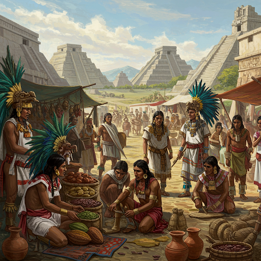
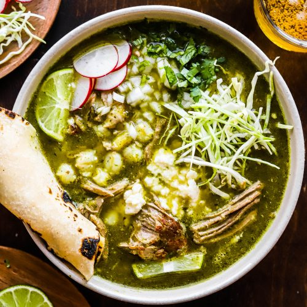

Pozole Rojo

This page is a full written recipe to a delicious pozole rojo. Along with the recipe comes with instructions and even a fun history lesson about the origins of pozole!
Pozole Recipe
History of Pozole
Pozole originated in pre-Columbian Mexico where it was a sacred dish made by the Aztecs and it often included human meat in religious or spiritual rituals. After Spanish colonization, pork became the standard type of meat and pozole started becoming a more common dish and not ritualistic.As the recipe spread, different regions developed their own versions, such as red (rojo), green (verde), and white (blanco) pozole, ingredients may also vary depending on local available sources. Today pozole is a popular dish in Mexican culture and is usually made during celebrations and family gatherings.

Recipe Overview
- To start, you will want to prepare the chile sauce by soaking the dried chiles in hot water until they soften (save a small portion of the soaking liquid afterwards)
- Then to a blender add the softened chiles with garlic, oregano,half an onion, and some of the soaking liquid we saved and blend until smooth and then strain the sauce using a mesh strainer
- Next, in a large pot, brown the pork and add a whole chopped onion
- Then to the same pot, pour in 10 quarts water, 16 oz of chicken broth , chile sauce, hominy
- Cover and bring the pot to a boil but then reduce heat to a medium simmer for around 2-3 hours or until the pork is very tender
- Then add salt, pepper, and cumin to taste
- And finally serve with your preferred toppings such as cilantro, cabbage, chopped onion, or even slices of radish, avocado or lime
Ingredients
- 15.5 lbs raw pork feet
- 1 cup of peeled garlic (around 3 large heads)
- 4 medium yellow onions
- 2.25 oz bag of Chile Guajillo Entero (Guajilla Chile Pods)
- 2.25 oz bag of Chili Nego Entero (Chili Negro Pods)
- 2.25 oz bag of Chili California Entero (California Chili Pods)
- 2.25 oz bag of Chili New Mexico Entero (New Mexico Chili Pods)
- 110 oz large can of hominy
- 20 quarts of water
- Salt (add to liking)
- Oregano (add to liking)
- 16 oz chicken broth
